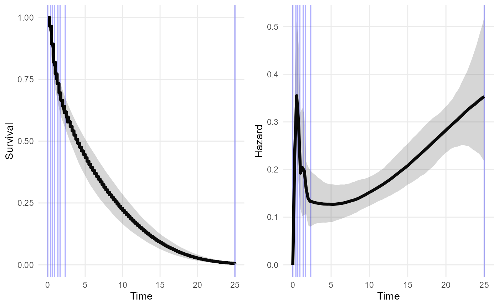
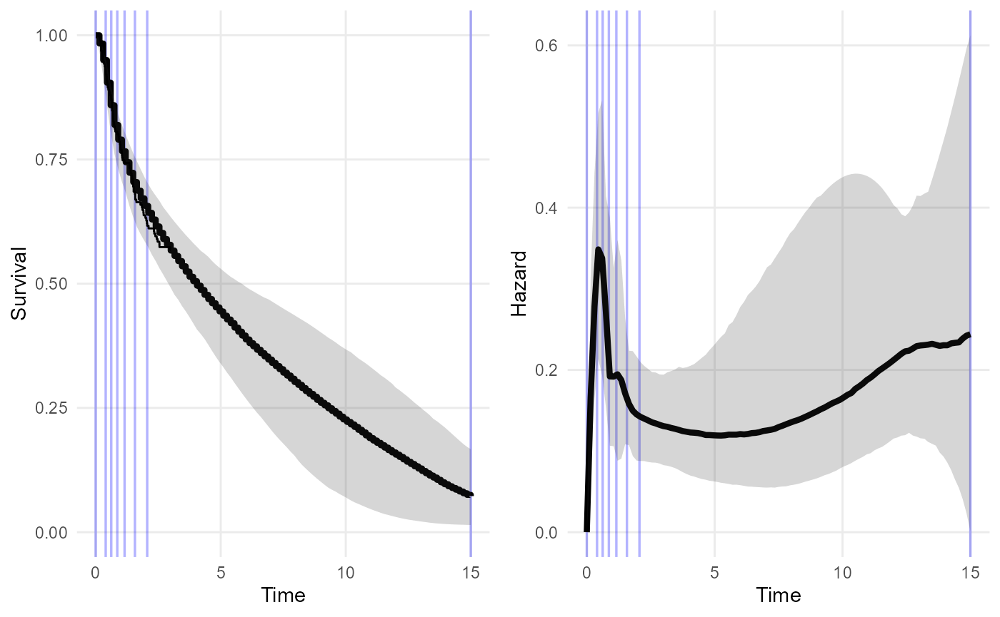
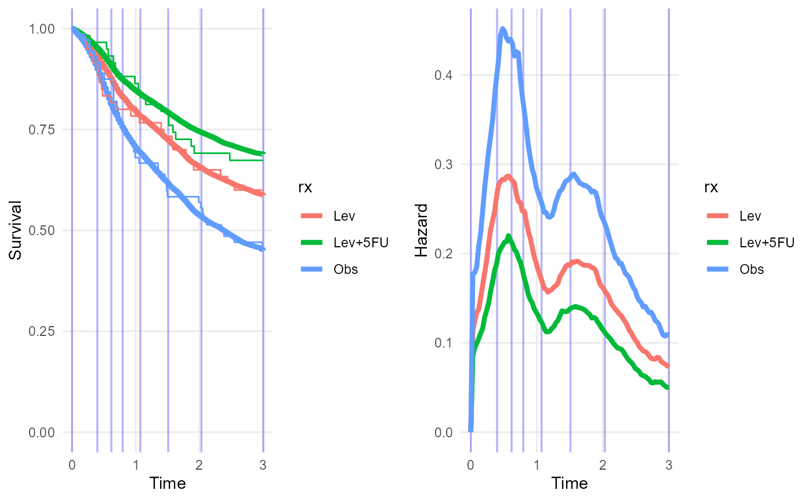
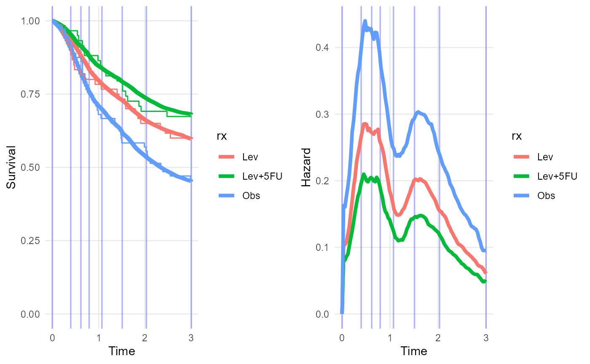
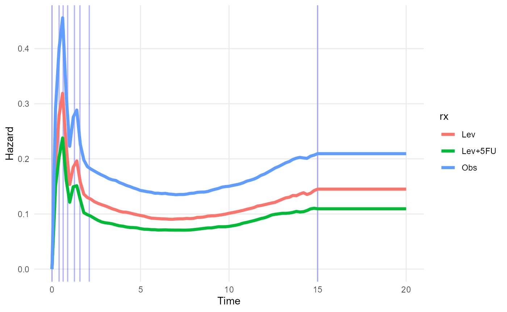
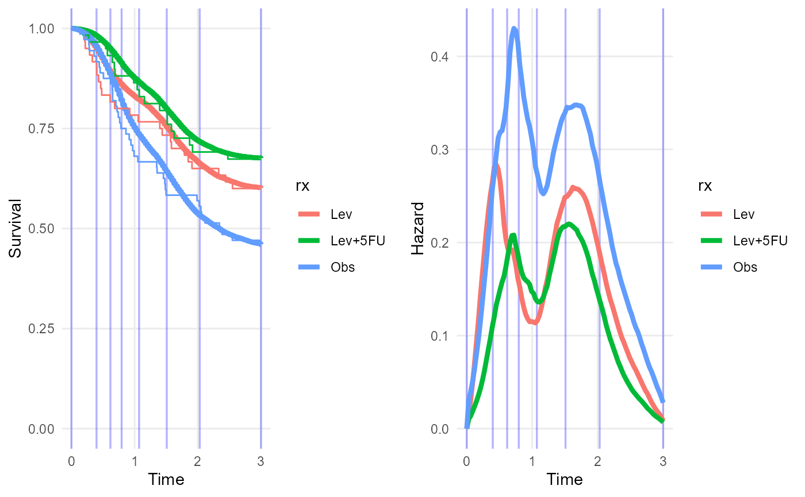
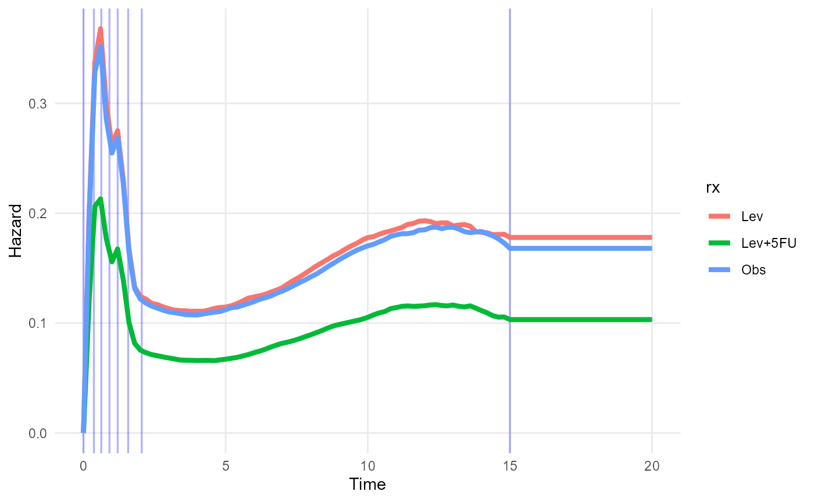
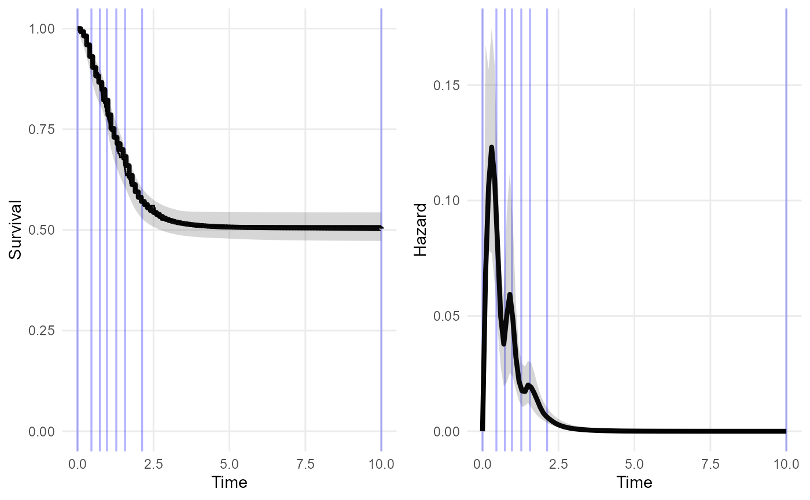

Examples of using survextrap
Christopher Jackson chris.jackson@mrc-bsu.cam.ac.uk
2022-07-11
Source:vignettes/examples.Rmd
examples.RmdThis vignette gives examples of how to run survextrap to
fit survival models.
See the README for the design principles of the package, and the methods vignette for technical details of the methods.
It is work in progress, so it will be sketchy in some places. The code is supposed to work, but do not be surprised if there are bugs - please report any on github issues.
Examples
For these examples, we use a dataset of trial of chemotherapy for
colon cancer, provided as colon in the
survival package, with an outcome of recurrence-free
survival (etype==1), artificially censored at 3 years, and
restricted to a random 20% subset. This is provided as
colons in the survextrap package for
convenience.
library(survextrap)
library(dplyr)
survminer::ggsurvplot(survfit(Surv(years, status) ~ 1, data=colons), data=colons)
No external data
The following is the simplest, default model in the package fitted to the short-term trial data alone. No external data are supplied. After three years (the maximum follow up time of the short term data) the model assumes the hazard stays constant.
The plot shows the posterior median and 95% credible intervals for the survival and hazard functions. The spline adapts to give a practically perfect fit to the short-term data - note the Kaplan-Meier curve is obscured by the fitted posterior median. Although the model assumes the extrapolated hazard is constant, there is still a wide uncertainty interval around this constant value. This might be thought to be plausible.
nd_mod <- survextrap(Surv(years, status) ~ 1, data=colons, chains=1)
plot(nd_mod, tmax=5)
The spline knots are shown as blue lines. We could allow for the possibility of hazard changes beyond three years by placing spline knots beyond this point.
The basehaz_ops argument is used to control the spline.
The bknots component of this is the vector comprising the
lower and upper boundary knots. Here we simply move the upper boundary
knot from three to four years.
nd_mod2 <- survextrap(Surv(years, status) ~ 1, data=colons, chains=1,
basehaz_ops = list(bknots = c(0, 4)))
plot(nd_mod2, tmax=5)
This increases the amount of uncertainty about the extrapolated survival and hazard.
There are other ways we could have done this, such as changing the position of the knot, or adding extra knots around or beyond the upper part of the data. The extrapolations are likely to be sensitive to the choice.
A sensible guide is to place the upper knot at the latest time that you are interested in modelling. Beyond this time, you either think the hazard will not change, or any changes in the hazard do not matter for the purpose of the model.
The priors should then be chosen to give a low probability that the hazard varies outside the range thought reasonable, e.g. in terms of orders of magnitude. The package should provide a nice way to convert beliefs of this kind into priors.
But note that it is only necessary to extrapolate in this way, using knots and default priors, if there is no substantive information about the long term hazard!
In many practical situations of extrapolation in time-to-event models, we do have information. For human survival, we at least know that people do not tend to live longer than 100 years. There are usually data from national agencies about mortality of general populations.
The idea of the package is to make this external information as explicit as possible - ideally in the form of data.
Mean and restricted mean survival
The functions mean and rmst calculate the
mean and restricted mean survival time (RMST) from a fitted model.
Uncertainty is expressed by using the MCMC sample of the model
parameters, and calculating the mean (or RMST) for each draw, which
produces a sample from the posterior distribution. The posterior median
and credible intervals are computed by summarising this sample.
For particular combinations of parameter values, the mean under the
model nd_mod cannot be calculated (resulting in an error
message about a divergent integral), suggesting there is a substantial
posterior probability that the mean is infinite.
Instead we compute the restricted mean survival time \(RMST(t)\) over three alternative time
limits \(t\): 3, 10 and 1000 years. The
upper 95% credible limit for \(RMST(1000)\) is very large.
(niter controls how many MCMC iterations to use to
summarise the distribution - this is artificially reduced here so this
example runs faster. In real applications you should check there are
enough iterations to get summaries with the amount of precision yoy want
- this will usually be 1000 or more)
## # A tibble: 3 × 5
## variable t median `2.5%` `97.5%`
## <chr> <dbl> <dbl> <dbl> <dbl>
## 1 rmst 3 2.20 2.06 2.31
## 2 rmst 10 5.26 3.33 6.34
## 3 rmst 1000 10.3 3.37 424.We do not really believe that the mean survival for this population can be this large.
This is evidence that the fitted model is unrealistic, and we should have included external information to bound the estimates of the mean within plausible values.
This can be done with external data.
Extrapolation using long term population data
Suppose we judge that after 5 years, the survival of these patients will be the same as in the general population, and we have some data describing the annual survival rates of a population who are similar to this one, perhaps from matching to national statistics or registry data by age and sex. We would construct it something like this (though fake data are shown here).
extdat <- data.frame(start = c(5, 10, 15, 20),
stop = c(10, 15, 20, 25),
n = c(100, 100, 100, 100),
r = c(50, 40, 30, 20))
nde_mod <- survextrap(Surv(years, status) ~ 1, data=colons,
chains=1, external = extdat)
plot(nde_mod)
mean(nde_mod, niter=100)## # A tibble: 1 × 4
## variable median `2.5%` `97.5%`
## <chr> <dbl> <dbl> <dbl>
## 1 mean 5.93 5.08 6.68## # A tibble: 3 × 5
## variable t median `2.5%` `97.5%`
## <chr> <dbl> <dbl> <dbl> <dbl>
## 1 rmst 3 2.18 2.03 2.33
## 2 rmst 10 4.80 4.22 5.36
## 3 rmst 1000 5.93 5.08 6.68Including the external data gives a more confident extrapolation. The mean is finite. RMST converges to the mean as it is supposed to.
At present, not much thought has gone into choice of knot locations with external data. Currently these knots are based on just concatenating the event times in the individual data with the follow-up times in the external data, and then taking quantiles. Suggestions are welcome for a smarter approach. Knots in the middle of follow-up intervals?
Expert elicitation on the long term
Information about long term survival could be elicited from experts. To use this information about the model, we should also elicit the expert’s uncertainty.
For example, we ask the expert to consider a set of people who have survived for 10 years. How many of them would they expect to survive a further 5 years? Through some kind of formal elicitation process, they supply a best guess (median) of 30%, and a 95% credible interval of 10% to 50%.
Using standard techniques from elicitation (SHELF) we can interpret that as a \(Beta(6.6, 15.0)\) prior distribution for the survival probability.
## shape1 shape2
## 1 6.588104 14.96673We can interpret this as the posterior from having observed \(y=6\) survivors out of \(n=20\) people (recalling the posterior from a \(Binomial(y, n)\) combined with a vague \(Beta(0.5, 0.5)\) prior is \(Beta(y+0.5, n-y+0.5)\), and rounding \(n\) and \(y\) to whole numbers).
So the expert’s judgment is equivalent to the information in an external dataset of the form
| Follow-up period | Number | ||
|---|---|---|---|
| Start time \(t\) | End time \(u\) | Alive at \(t\) | Still alive at \(u\) |
| 10 | 15 | 20 | 6 |
and we can use it in a survextrap model as follows:
extdat <- data.frame(start = c(10), stop = c(15),
n = c(20), r = c(6))
nde_mod <- survextrap(Surv(years, status) ~ 1, data=colons,
chains=1, external = extdat)
plot(nde_mod)
mean(nde_mod, niter = 100)## # A tibble: 1 × 4
## variable median `2.5%` `97.5%`
## <chr> <dbl> <dbl> <dbl>
## 1 mean 5.92 4.36 7.61There is still substantial uncertainty about the mean, even with this
level of information, but comparing to the second model above
(nd_mod2), it is better than no information at all. More
investigation of the role of the knot placement here (blue lines in the
figure) might be wise - particularly the one at 15 years.
This approach might be extended to include elicited values from
multiple time points, or considering multiple experts. In each case the
elicited information can be converted straightforwardly into an
aggregate table for use in survextrap.
Covariates
survextrap uses a proportional hazards model to
represent covariates. In the example here, we model survival by
treatment group rx, which is a factor with three levels.
First fit a standard Cox model:
## Call:
## coxph(formula = Surv(years, status) ~ rx, data = colons)
##
## coef exp(coef) se(coef) z p
## rxLev -0.3919 0.6758 0.2597 -1.509 0.1313
## rxLev+5FU -0.6740 0.5097 0.2800 -2.407 0.0161
##
## Likelihood ratio test=6.39 on 2 df, p=0.04088
## n= 191, number of events= 82Then fit a survextrap model and extract the log hazard
ratios. These agree with the Cox model - as expected, as we are using a
proportional hazards model with a very flexible baseline hazard
function.
rxph_mod <- survextrap(Surv(years, status) ~ rx, data=colons, chains=1, refresh=0)
summary(rxph_mod) |>
filter(variable=="loghr")## # A tibble: 2 × 7
## variable term median lower upper sd i
## <chr> <chr> <dbl> <dbl> <dbl> <dbl> <int>
## 1 loghr rxLev -0.404 -0.906 0.0823 0.250 1
## 2 loghr rxLev+5FU -0.678 -1.24 -0.151 0.280 2The posterior median survival curves (thick lines) agree with the subgroup-specific Kaplan-Meier estimates (thin lines).
plot(rxph_mod, niter=100)
Any number of covariates, categorical or continuous, can be included.
We can also have covariates in the external data. If covariates are
included in the model formula, and an external dataset is supplied, then
we must specify covariate values for each row of the external dataset.
(If the covariates are factors, then they can be supplied as character
vectors in external, but the values should be taken from
the factor levels in the internal data [todo: this probably isn’t a
necessary restriction])
For example, the external data might be assumed to have the same
survival as the control group of the trial (corresponding to a value of
"Obs" for the variable rx).
extdat <- data.frame(start = c(5, 10), stop = c(10, 15),
n = c(100, 100), r = c(50, 40),
rx = "Obs")
rxphe_mod <- survextrap(Surv(years, status) ~ rx, data=colons,
chains=1, external = extdat, refresh=0)
rmst(rxphe_mod, niter=100, t=20)## rx variable t median 2.5% 97.5%
## 1 Obs rmst 20 4.857357 3.993268 6.119437
## 2 Lev rmst 20 6.694421 4.260593 9.168274
## 3 Lev+5FU rmst 20 8.579628 6.216561 11.303345
plot(rxphe_mod, niter=100, tmax=5)
plot_hazard(rxphe_mod, niter=100, tmax=20)
Cure models
Generate a dataset with an obvious cure fraction
library(flexsurvcure)
set.seed(1)
t <- rmixsurv(qweibull, n=200, theta=0.5, shape=1.5, scale=1.2)
censtime <- 10
cure_df <- data.frame(t = pmin(t, censtime), status = as.numeric(t < censtime))
plot(survfit(Surv(t, status) ~ 1, data=cure_df))
noncure_mod <- survextrap(Surv(t, status) ~ 1, data=cure_df, chains=1,
cure=FALSE)
plot(noncure_mod) # doesn't quite capture the curve
cure_mod <- survextrap(Surv(t, status) ~ 1, data=cure_df, chains=1, cure=TRUE, iter=1000)
plot(cure_mod, tmax=10, niter=20) 
Covariates on the cure fraction can be supplied by putting a formula
in the cure argument. These will be modelled using logistic
regression.
Demonstrate this by simulating some data with a log odds ratio for cure of 0.5:
x <- rep(c(0,1), each=500)
logor_cure <- 0.5
cure_prob <- plogis(qlogis(0.5) + logor_cure * x)
t <- numeric(1000)
set.seed(1)
for (i in 1:1000)
t[i] <- flexsurvcure::rmixsurv(qweibull, n=1, theta=cure_prob[i], shape=1.5, scale=1.2)
censtime <- 10
cure_df <- data.frame(t = pmin(t, censtime), status = as.numeric(t < censtime), x=x)
curec_mod <- survextrap(Surv(t, status) ~ 1, data=cure_df, chains=1, cure=~x, iter=1000,
fit_method="opt")
summary(curec_mod) %>%
filter(variable %in% c("pcure", "logor_cure", "or_cure"))## # A tibble: 3 × 7
## variable term median lower upper sd i
## <chr> <chr> <dbl> <dbl> <dbl> <dbl> <int>
## 1 pcure NA 0.545 0.514 0.576 0.0155 NA
## 2 logor_cure x 0.684 0.445 0.938 0.130 1
## 3 or_cure x 1.98 1.56 2.55 0.260 1